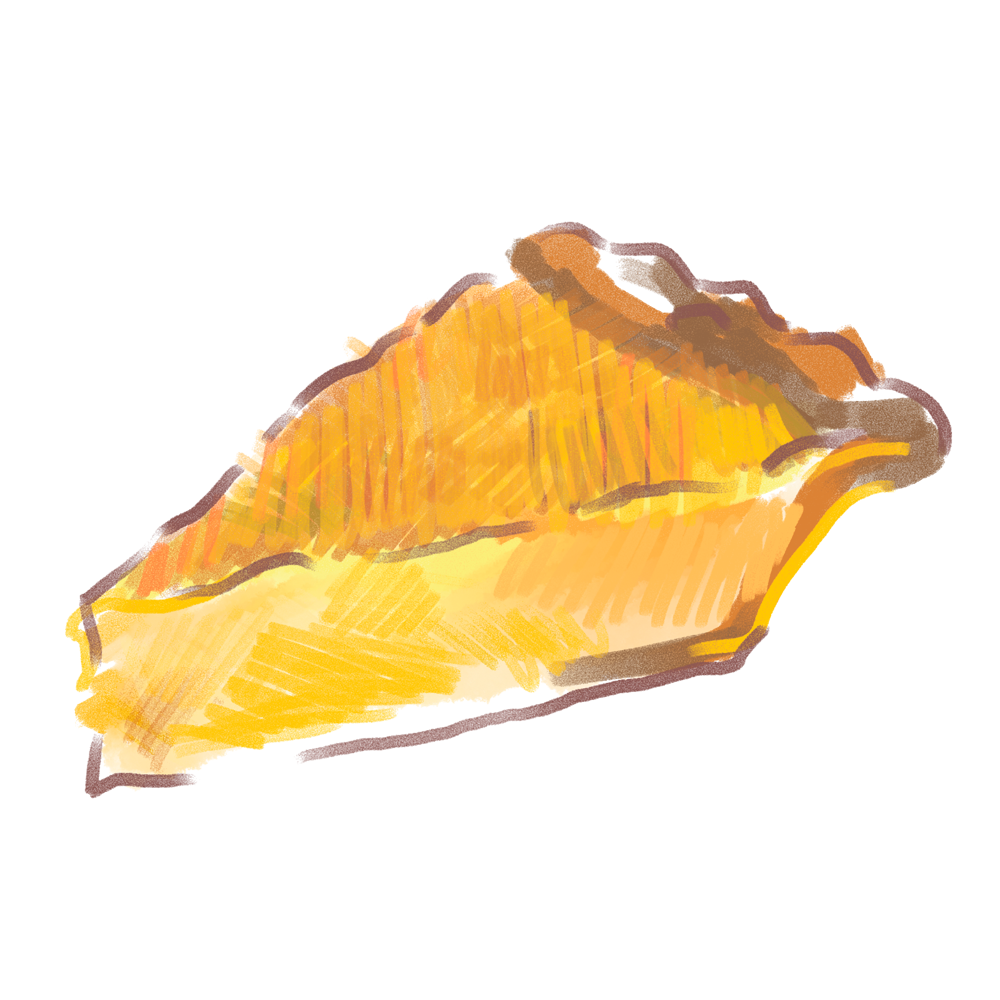

A little bit about
Jerome Patton
Meet Jerome Patton—husband, grandfather and truck driver
from Nashville, Tennessee.
He's a proud product of
the South
and he's got a lot to say about his upbringing, his struggles and
the state of Black
food
in
America.
A Story in the Past
A one-year old Jerome with his newborn sister Jackie
"I just wanted to be a kid, but there was no being a kid in where it is that I came from."
Jerome was born in segregation, and while the Jim Crow laws were abolished when he was young, the effects would pervade his entire life to come. His mother was 16 when he was born and so she immediately set out to work, earning around 50 cents a day through housekeeping. Being the eldest of seven siblings, Jerome was accustomed to making food stretch. For around 75 cents in the late 1960s, the Pattons would buy a big bag of baloney and bread and make it last for days at a time. Breakfasts growing up consisted of puffed wheat, oatmeal or rice with sugar. Even when they were able to afford other foods, Jerome's family would just gravitate to that way of eating.
Trying to buy groceries, Jerome realizes now, was deeply affected by systematic racism. "It was like our diets were dictated by others." Whatever meat was left to spoil was all that was available to Jerome. He points to moments like these as when he started to become more conscious of the influences on his diet. This consciousness would lead to Jerome trying to become healthier and reflect upon the root of these problems he faced today.
Present Day Story
An incident that really opened Jerome’s eyes to the reality of his upbringing was his time in the military
Jerome during his time in the military
“My exposure is what helped me see something different. When I come back home and try to introduce it to
my
family, y'know creatures of habit, old habits die hard. I was the one with the problem everybody else was
normal. I got better, initially I came home, I remember coming home from the military trying to be a
vegetarian. And it's the temptation, it's like, at that point I'm acclimated to that stuff, to my
environment growing, up like that . “
And just because he had the intention for change didn't mean that the world back home had the same
motivations. He realized how deeply ingrained the habits were into the culture.
“I remember coming home. My plan was to come home from the military, go back to the west coast, I had a
couple of good home cooked meals because I haven't had that stuff in a fried, cornbread, fried chicken,
and
it was good. … anyway when the parade was over, then what I ended up doing was I tried to be a vegetarian,
and keep in mind this is 1980, trying to do these things. “
But changes to their diet is not limited to the responsibility of one individual. Environmental factors as
well as the community as a whole need to be receptive to change and work together to realize these ideals
on
a larger, fundamental level.
“And, just because I was trying to do something different didn’t mean that they were trying to do
something
different ... when you are trying to do something different and the environment is dysfunctional, they'll
pull you down faster than you can pull them up … it's just the laws of gravity.“
A Hope for the Future
Jerome & his daughter after a church outing.
Jerome’s thoughtful and charming perspective around food and culture weaved a colourful and exciting tale through the span of four separate interviews. His stories remained intimate and informative. It ranged from his experiences with being vegetarian, his food journey, alongside the lessons that he learned throughout the years.
Jerome comes from a big family, and there are various traditions that he hopes will continue to be passed down from generation to generation. He shared tidbits of information about his grandson’s eating habits that he wishes to be more balanced and healthier in the near future. As someone who had a positive experience of the vegetarian lifestyle for a brief period, Jerome hopes that his family will practice more nutritious eating habits and carry those values through time.
He expressed his sorrows at not having a choice to dig deeper into his culture when he was younger, and remains hopeful that his culture’s food traditions will be more widespread in the future.
When asked about his hopes regarding the black community and their relationship with food, he concluded with the statement,
“That’s my hope, that we can find out who we truly are and take on some of the healthier behaviours in regards to food.”